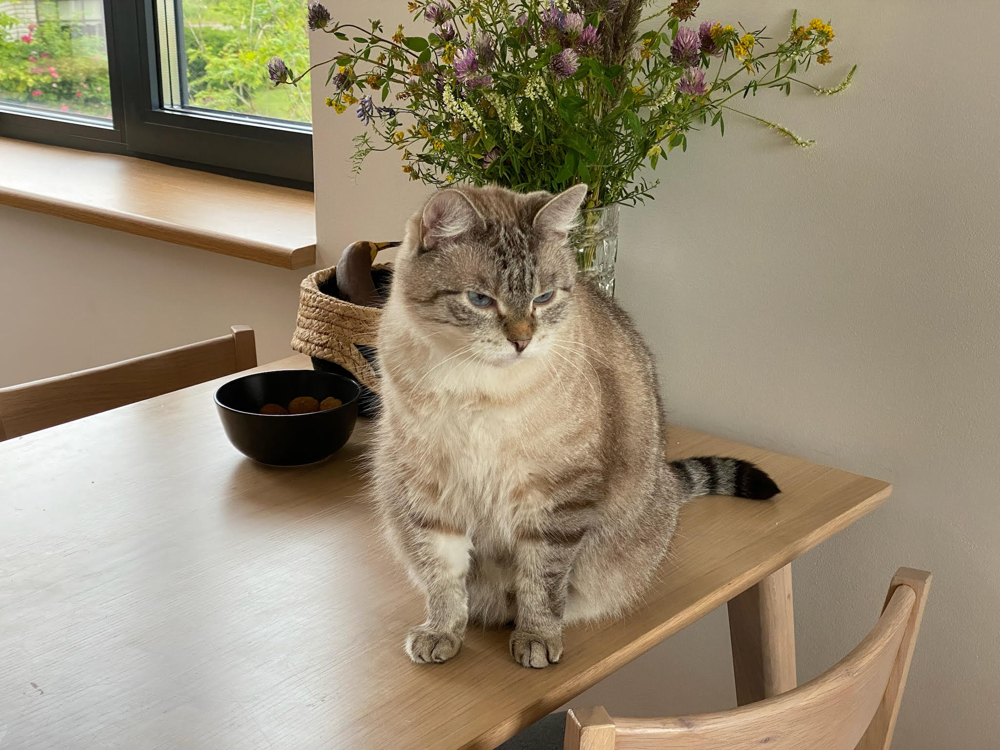
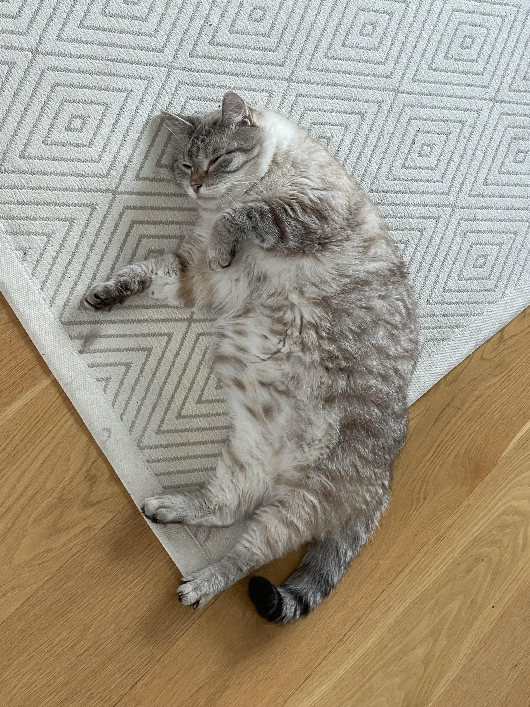
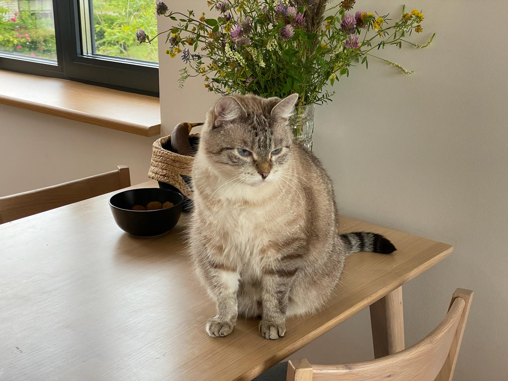
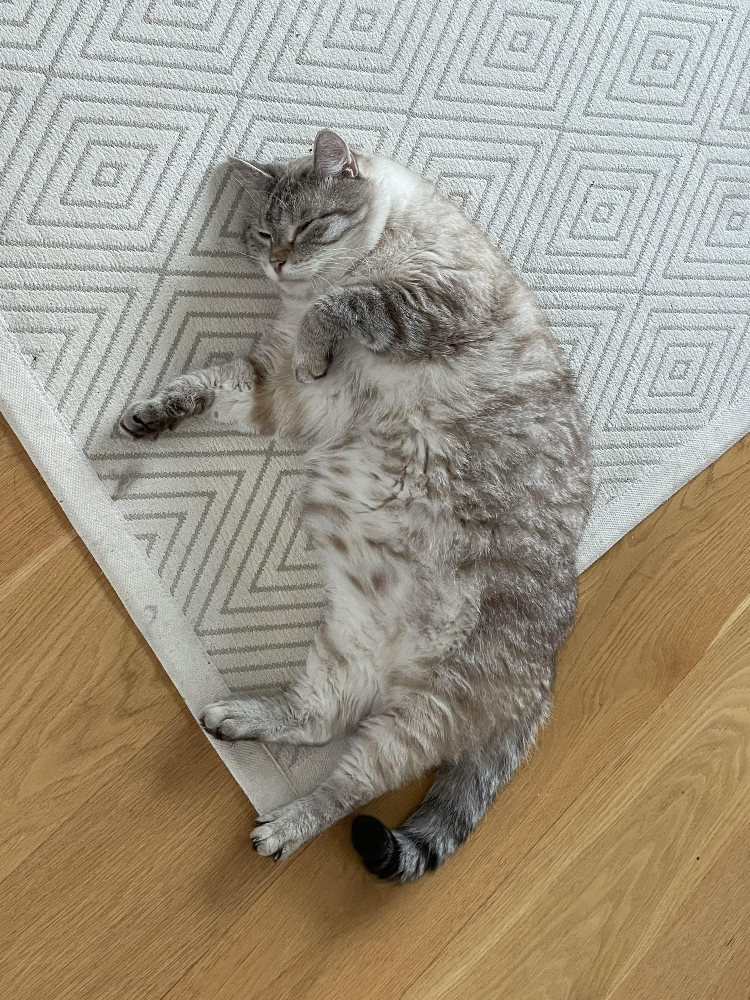

Siidor on segutõugu kass. Ta karv on hall tumedamate triipudega.
Tõug: segu tänavakass,
Vanus: 10
Silmad: helesinise marmori värvi
Karv: kõhu juurest valge ning pealt on ta halli tumeda-triibuline.
Siidor on väga rahulik ja viisakas kass. Ta ei näita kellelegi küüsi, isegi kui sa ta sülle võtad ning see talle eriti ei meeldi. Tema lemmik lesimiskoht on seal, kus on inimeste lähedus ja soe: tavaliselt kas inimestega diivanil ja voodis või aknalaual päikest nautides. Tema lemmiktoit on märgtoit ja kõik, mis on ta kassisõbra Sämmie söögikausis. Tema lemmiktegevus on mõnusalt silmad kinni lesimine, aga ega ta väiksele maadlusele “ei” ütle.
Ta on muidu tagasihoidlik oma küüntega, aga oi, kuidas talle meeldib diivaneid kratsida.
Lõbus fakt: Siidorile meeldib väga istuda ümmargustes kraanikaussides, sest ta mahub sinna täpselt ära ja ta ei liigu isegi, kui sa kraani käima paned.
 


